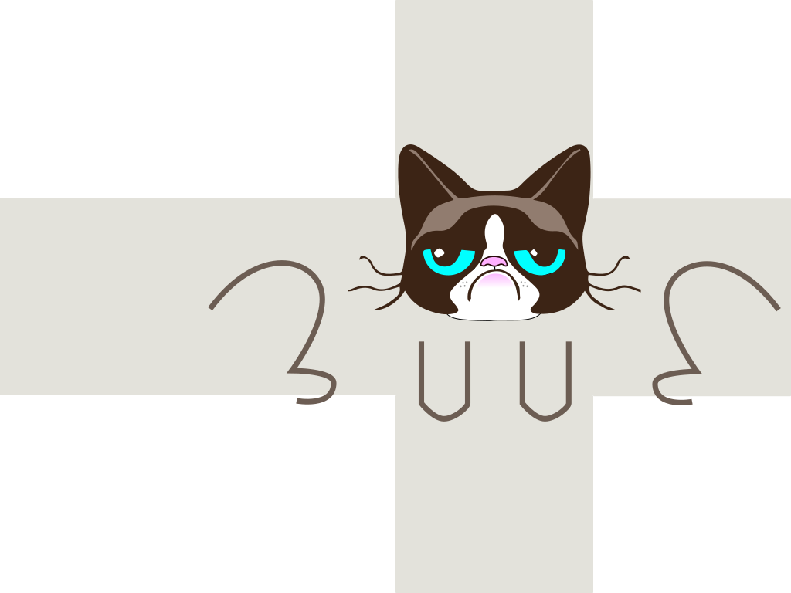

svg2cube
Fold a svg panel into a cube and take images at isometric angles.
The panel on the right allows you to try different parameters.
Input
Output

Fold a svg panel into a cube and take images at isometric angles.
The panel on the right allows you to try different parameters.